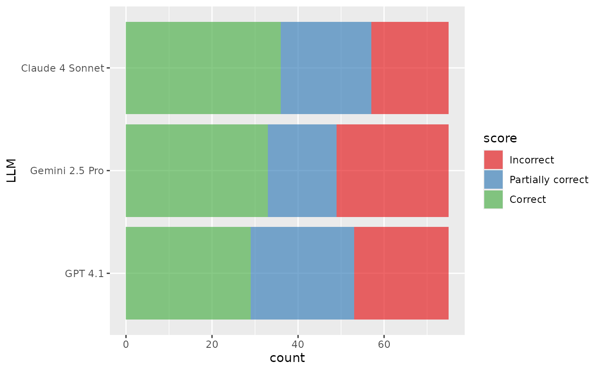
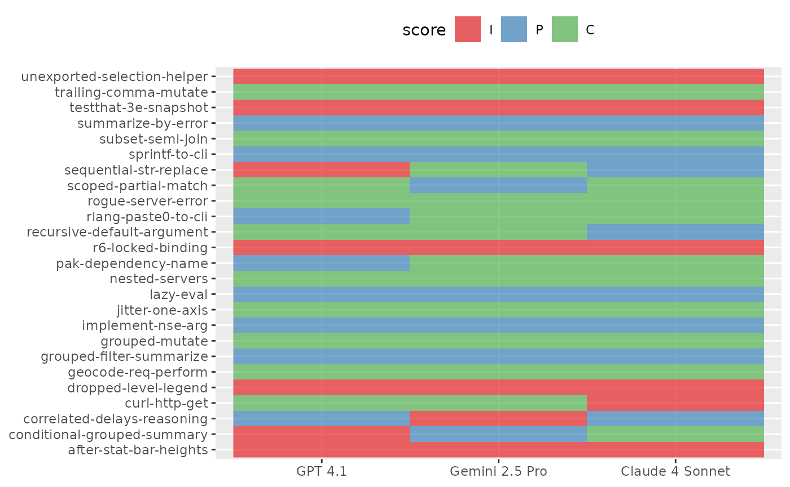
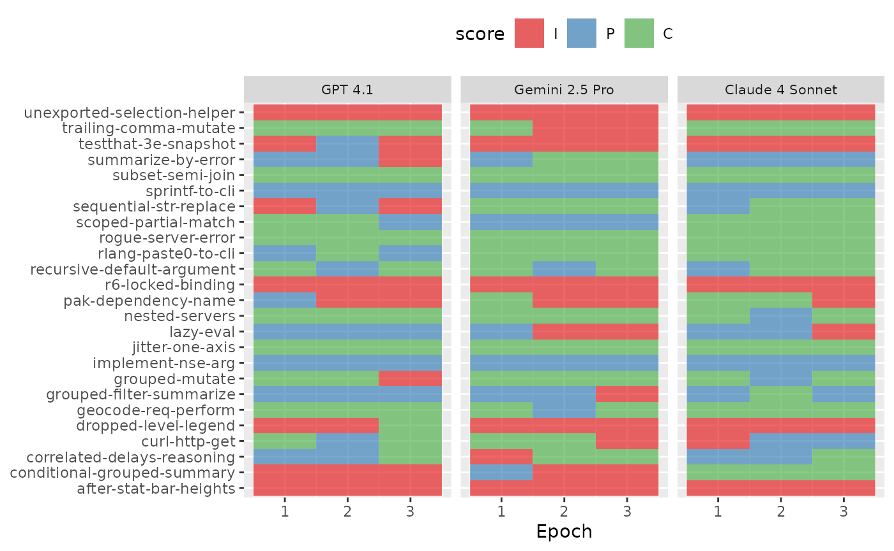
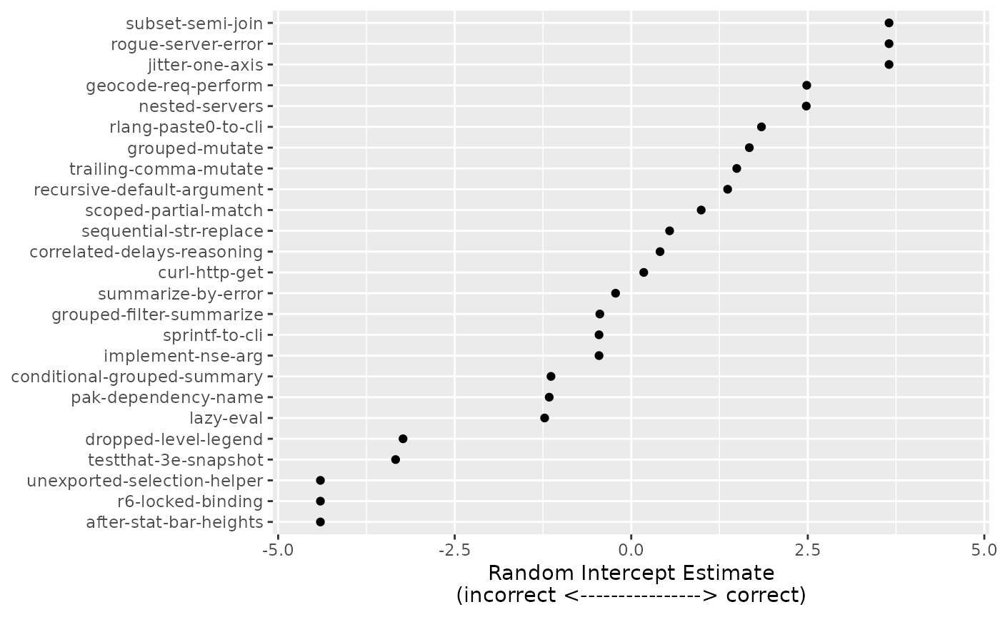
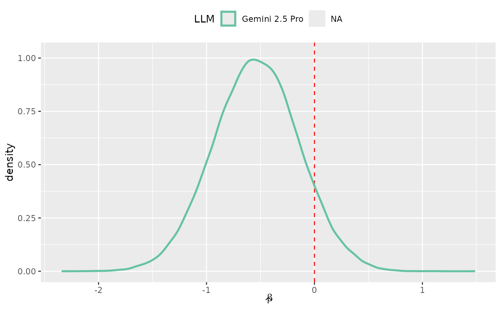
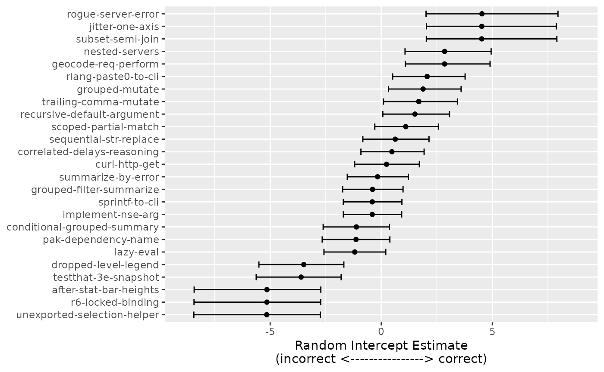

Analyzing evaluation results
Max Kuhn & Simon Couch
Source:vignettes/articles/analysis.Rmd
analysis.RmdConsider the following evaluation based on the are
data:
are_task <-
Task$new(
dataset = are,
solver = generate(),
scorer = model_graded_qa(
scorer_chat = chat_anthropic(LLM = "claude-3-7-sonnet-latest"),
partial_credit = TRUE
),
name = "An R Eval",
epochs = 3
)
are_claude <- are_task$clone()
are_claude$eval(solver_chat = chat_anthropic(LLM = "claude-sonnet-4-20250514"))
are_gpt <- are_task$clone()
are_gpt$eval(solver_chat = chat_openai(LLM = "gpt-4.1"))
are_gemini <- are_task$clone()
are_gemini$eval(solver_chat = chat_google_gemini(LLM = "gemini-2.5-pro-preview-05-06"))These evaluations look a lot like those from the “Getting started
with vitals” vignette from
vignette("vitals", package = "vitals"), except:
- We evaluate three LLMs, rather than two.
- We set
epochs = 3inTask$new()so that each sample inareis run through the eval multiple times.
Passing the evaluated tasks to vitals_bind() will
concatenate the results into a tabular data frame:
are_eval <-
vitals_bind(
`Claude 4 Sonnet` = are_claude,
`GPT 4.1` = are_gpt,
`Gemini 2.5 Pro` = are_gemini
) %>%
rename(LLM = task)
are_eval## # A tibble: 225 × 5
## LLM id epoch score metadata
## <chr> <chr> <int> <ord> <list>
## 1 Claude 4 Sonnet after-stat-bar-heights 1 I <tibble>
## 2 Claude 4 Sonnet after-stat-bar-heights 2 I <tibble>
## 3 Claude 4 Sonnet after-stat-bar-heights 3 I <tibble>
## 4 Claude 4 Sonnet conditional-grouped-summary 1 C <tibble>
## 5 Claude 4 Sonnet conditional-grouped-summary 2 C <tibble>
## 6 Claude 4 Sonnet conditional-grouped-summary 3 C <tibble>
## 7 Claude 4 Sonnet correlated-delays-reasoning 1 P <tibble>
## 8 Claude 4 Sonnet correlated-delays-reasoning 2 P <tibble>
## 9 Claude 4 Sonnet correlated-delays-reasoning 3 C <tibble>
## 10 Claude 4 Sonnet curl-http-get 1 I <tibble>
## # ℹ 215 more rowsvitals tries to make it as easy as possible to transform evaluation
results into analysis-ready data; are_eval is a
regular-degular data frame. How does one analyze this sort of data,
though? This article will provide some recommendations for analyzing
evaluation results using modeling.
Our experimental design lends itself to an analysis of variance (ANOVA) where we want to compare two or more mutually exclusive groups (like those formed by splitting the data up by LLM or system prompt) to see if there is a difference. We often call these grouping variables covariates.
Our data might add some complications; basic ANOVA models assume that each sample (i.e. row of a dataset) is independent of the others. The sample is the independent experimental unit, and determines whether our data is in one of two classes:
- Independent Data: Each sample is evaluated once per covariate combination (i.e., a single epoch).
- Multiple Hierarchies: Samples for the same covariate combination are evaluated multiple times, resulting in repeated measures (multiple epochs).
Independent data can be analyzed without much complication using ordinary statistical methods (e.g., linear or multinomial regression).
With one or more hierarchies, we need to account for correlated data. Ignoring this issue will under-power the statistical analysis. Models that account for this hierarchical structure have many names, and they can be estimated in multiple ways.
- Frequentist Methods, such as mixed models, assume that the model parameters are fixed. They produce confidence intervals and p-values and are outlined in the first part of this article.
- Bayesian Methods, such as Bayesian hierarchical models, are more flexible and computationally intensive. They produce posterior probabilities and credible intervals.
Before we go further, we’ll need a few additional packages:
library(tidyverse)
library(ordinal)
library(cli)
library(gt)
library(brms)
library(RcppEigen)
library(broom)Data Structure
Revisiting are_eval:
are_eval |>
mutate(
score = factor(
case_when(
score == "I" ~ "Incorrect",
score == "P" ~ "Partially correct",
score == "C" ~ "Correct"
),
# align ordering with original factor
levels = c("Incorrect", "Partially correct", "Correct"),
ordered = TRUE
)
) |>
ggplot(aes(y = LLM, fill = score)) +
geom_bar(alpha = 2 / 3) +
scale_fill_brewer(palette = "Set1")
In this data:
- We’re comparing results from 3 different tasks. The
separate tasks, in this case, represent three different LLMs,
Anthropic’s Claude 4 Sonnet, and OpenAI’s GPT 4.1, and Google’s Gemini
2.5 Pro. We’ll refer to the identifier for the task as
p(shown inare_evalas columnLLM). - Underlying the tasks are a dataset of 75 samples. Each sample contains a question to be asked to an LLM.
- Once the LLM answers a given sample, the answer is assigned one of
three qualitative, ordinal scores: Incorrect
(
I), Partially correct (P), or correct (C). We’ll denote as a discrete random variable representing the scores that take on values (with here).
A completely balanced data set would contain rows (and does in our case).
With this data structure, the LLM is the systematic
effect in the data on which we would like to make inferences about
(i.e., is accuracy better for one LLM, etc.). The samples are the
independent experimental units; statistically, we believe that
the results for sample 1 are independent of sample 2 and so on.
There are two potential levels of hierarchy we need to consider when analyzing evaluation data:
- LLMs are not deterministic; given the same prompt, LLMs will not always return the same answer. To measure variation, we run the same sample multiple times, generating a set of epochs. We thus must account for repeated measures, where the epochs have no systematic ordering effect. However, we expect a within-sample correlation to occur. This means that we would expect the data points within a specific sample to be more likely to correlate with one another than with a data point from a different sample.
- Second, the rating method could be variable. Multiple raters might score the LLM output for multiple samples (or sample/epoch combination) to offset the chances of a systematic rater bias. This also could result in a similar within-rater correlation. In our case, we have a single rater, so don’t need to account for this in this specific analysis.
The primary data layer in each case is the independent experimental unit: the samples. Each layer below this incurs an additional variance component.
To make valid inferences, it is crucial to appropriately account for these multiple sources of variation. Consider random variables and (which, in this context, might represent the accuracies of LLMs) as a simple example. If we wanted to evaluate their difference, the variance of that difference is . Standard statistical tools, like the basic t-test, use signal-to-noise ratios. The covariance term would be nonzero if there is a within-sample (or rater) correlation. If we were to ignore this, we would artificially under-power our assessment of the difference and might erroneously fail to show a difference. Our analyses below differentiate the cases with one or more data hierarchies.
ANOVA-Type Models
The analysis of variance (ANOVA) is a bedrock tool for comparing different groups in a data set. Our outcome scores are categories, so a type of model called a generalized linear model can be used to analyze the results. Without ordered categories, we’ll focus on an ordinal logistic regression model. There are many different variants of this model but one of the most common is the cumulative probability model. For possible values of the scores, there are probabilities for samples. For example, would model the probability of being not completely incorrect.
Independent Data
Let’s first consider the case where each of the rows in
are_eval are statistically independent, conditional on
LLM. Said another way, we can keep only the rows for the
first epoch:
## # A tibble: 75 × 5
## LLM id epoch score metadata
## <fct> <chr> <int> <ord> <list>
## 1 Claude 4 Sonnet after-stat-bar-heights 1 I <tibble>
## 2 Claude 4 Sonnet conditional-grouped-summary 1 C <tibble>
## 3 Claude 4 Sonnet correlated-delays-reasoning 1 P <tibble>
## 4 Claude 4 Sonnet curl-http-get 1 I <tibble>
## 5 Claude 4 Sonnet dropped-level-legend 1 I <tibble>
## 6 Claude 4 Sonnet geocode-req-perform 1 C <tibble>
## 7 Claude 4 Sonnet grouped-filter-summarize 1 P <tibble>
## 8 Claude 4 Sonnet grouped-mutate 1 C <tibble>
## 9 Claude 4 Sonnet implement-nse-arg 1 P <tibble>
## 10 Claude 4 Sonnet jitter-one-axis 1 C <tibble>
## # ℹ 65 more rowsIn this setting, we could visualize scores sample-by-sample for one epoch like so:
are_eval_single %>%
ggplot(aes(x = LLM, y = id)) +
geom_raster(aes(fill = score), alpha = 2 / 3) +
scale_fill_brewer(palette = "Set1") +
labs(x = NULL, y = NULL) +
theme(legend.position = "top")
To model the score probabilities, the cumulative logit model estimates values of
for samples evaluated with LLMs which produce outcomes . The values are binary indicators for all but one of the LLMs. This is a full-rank parameterization; the effect of the LLM corresponding to is captured by the different intercepts (). With this parameterization, the parameters correspond to the effect of the LLM above and beyond the effect of the LLM associated with .
This is a parallel model because it assumes that the pattern of LLM effectiveness is constant across the different outcome categories; in other words, if Model A is twice as likely as Model B to get a “Correct” vs “Partially correct” answer, then Model A is also twice as likely to get “Partially correct or Correct” vs “Incorrect”. It can also referred to as a proportional odds model.
The parameters can be estimated using standard maximum likelihood estimation, assuming a multinomial distribution. This enables us to easily calculate the covariance matrix of the parameters and inferential procedures. Because of the properties of maximum likelihood, we can also make inferences on functions of the parameters that are monotonic in nature (e.g., , etc).
We’ve ordered the LLMs above so that the worst-performing LLM has an index of .1 This parameterization allows for a direct path to inference since the parameters increase the odds that LLM performs better than the worst LLM. We can easily estimate null hypotheses that test the two LLMs’ differences and/or create confidence intervals for the odds.
The model structure is more simple in the one-epoch case:
single_mod <- clm(score ~ LLM, data = are_eval_single)The estimates are as follows:
tidy(single_mod, conf.int = TRUE, conf.level = 0.9) %>%
mutate(
LLM = gsub("LLM", "", term),
parameter = ifelse(coef.type == "intercept", "theta", "beta")
) | LLM | parameter | estimate | std.error |
|---|---|---|---|
| I|P | theta | −0.931 | 0.396 |
| P|C | theta | 0.396 | 0.382 |
| Gemini 2.5 Pro | beta | 0.285 | 0.528 |
| Claude 4 Sonnet | beta | 0.179 | 0.522 |
The first point of inference is to determine if there is a difference between any of the LLMs. This is determined by fitting a submodel with no parameters. The difference in likelihood values between the models can be compared to an appropriate distribution to produce a p-value for the null hypothesis that all of the values are equal. For our analysis that excludes all but one epoch, the p-value is 0.861, indicating that there is not evidence that the models have different accuracies for these data.
Despite this, let’s look at how the coefficients can be interpreted. The table below shows the exponentiated coefficients and 90% confidence intervals. Maximum likelihood estimation enables the use of monotonic transformations of estimates.
single_coef %>%
filter(!grepl("\\|", LLM)) %>%
select(LLM, estimate, lower = conf.low, upper = conf.high) %>%
mutate(
estimate = exp(estimate),
lower = exp(lower),
upper = exp(upper)
)| LLM | estimate | lower | upper |
|---|---|---|---|
| Gemini 2.5 Pro | 1.33 | 0.559 | 3.19 |
| Claude 4 Sonnet | 1.20 | 0.506 | 2.84 |
These are the odds ratios for the different LLMs. Recall that, for the model fit, the LLMs were indexed with GPT 4.1 in the first position. The estimates above are the increase in the odds of being more correct than GPT 4.1. The fact that all of the intervals include 1.0 indicates that there is not enough evidence to believe that there are differences in any of these LLMs.
Multiple Hierarchies
How does the analysis change when we incorporate the samples from every epoch? To illustrate the structure we’d like to model, we can visualize the variation in scores for each sample and LLM similarly to before:
are_eval %>%
ggplot(aes(x = epoch, y = id)) +
geom_raster(aes(fill = score), alpha = 2 / 3) +
facet_wrap(~ LLM, ncol = 3) +
scale_fill_brewer(palette = "Set1") +
labs(x = "Epoch", y = NULL) +
theme(
legend.position = "top",
strip.text = element_text(size = 8)
)
We can extend the cumulative logistic model to account for additional
data hierarchies by incorporating random effects due to specific random
variables. In the case of are_eval, we’ve evaluated the
model with epochs = 3, so that there are three replicates
of each sample. We are not interested in making inferential statements
about the specific replicates; they are nuisance variables that we must
account for in the analyses but are adjacent to our goals. A common
approach is to add a random effect to the model that, on average, has
zero effect on the model’s prediction function. Instead, it helps model
the variability of the data.
Let’s adjust our model equation and add a random intercept term due to replicates:
where reflects a random variation in the intercept for each category due to replicate replicates. We need to make a probabilistic assumption for these values, and a convenient approach is to assume that they are independently distributed as . This addition to the model reflects that the baseline log-odds can randomly fluctuate with different epochs. Still, the overall relationship between the log odds and the LLM parameters does not change (on average).
A more complex estimation method is needed to solve the maximum likelihood equations. However, the model shown above is not overly complex and, with more than two epochs, should not be difficult to train. We can still conduct the same inferential methods as previously shown, and, as a bonus, we can use our estimates of the to help us understand which samples are most difficult for the LLMs to correctly solve.
To model this structure, we first fit two models. The first is as
before, additionally incorporating the random effect
(1|id). Note that the random effect is for the question ID
rather than the epoch. The second, null model does not account for the
LLM.
multiple_mod <- clmm(score ~ LLM + (1|id), data = are_eval, Hess = TRUE)
multiple_null <- clmm(score ~ 1 + (1|id), data = are_eval, Hess = TRUE)Comparing these two model fits, then, shows us the effect of
incorporating the LLM variable on the fit:
multiple_lrt <- anova(multiple_null, multiple_mod)
multiple_coef <-
multiple_mod %>%
tidy(conf.int = TRUE, conf.level = 0.9) %>%
mutate(
LLM = gsub("LLM", "", term),
parameter = ifelse(coef.type == "intercept", "theta", "beta")
) | LLM | parameter | estimate | std.error |
|---|---|---|---|
| I|P | theta | −1.43 | 0.587 |
| P|C | theta | 0.856 | 0.599 |
| Gemini 2.5 Pro | beta | 0.0114 | 0.386 |
| Claude 4 Sonnet | beta | 0.548 | 0.386 |
In this case, the increased number of data points results in a much smaller p-value for the overall test for any difference by LLM (0.273). Notice that the parameter estimates are larger in magnitude, and the standard errors are fairly small relative to the point estimates.
For this analysis, the odds ratios indicate that the other two models improved accuracy relative to GPT 4.1, but the overlap of the 90% confidence intervals with 1 suggests that there are no statistically significant differences from the other LLMs.
| LLM | estimate | lower | upper |
|---|---|---|---|
| Gemini 2.5 Pro | 1.01 | 0.536 | 1.91 |
| Claude 4 Sonnet | 1.73 | 0.916 | 3.26 |
Running this evaluation across multiple epochs also allows us to ask more interesting questions about the evaluation itself (rather than LLMs’ performance on it alone), too. Are some questions harder than others?
Since we included (1|id) in our model structure, the
model estimates random effects
for each question.
multiple_intercepts <-
are_eval %>%
distinct(id) %>%
mutate(
effect = multiple_mod$ranef,
# reorder the ids by the magnitude of the effect associated with them
id = factor(id),
id = reorder(id, effect)
)
effect_range <- max(extendrange(abs(multiple_intercepts$effect)))
multiple_intercepts %>%
ggplot(aes(x = effect, y = id)) +
geom_point() +
labs(y = NULL, x = "Random Intercept Estimate\n(incorrect <----------------> correct)") +
lims(x = c(-effect_range, effect_range))
The distribution of these is assumed to be Gaussian-like, with smaller values indicating that a sample is more difficult. For example, the most challenging sample was “after-stat-bar-heights” where, across all LLMs and epochs, 0 of 9 scores were categorized as correct.
Bayesian Hierarchical Models
Previously, we estimated parameters for our cumulative logit model using maximum likelihood. We assumed a binomial likelihood for the outcome, and in the case where there were additional hierarchies, we assumed the normality of random effects. Once we make these probabilistic assumptions, we can maximize the likelihood function to determine our estimates of the , , and potentially, parameters. MLE finds point estimates of the parameters to maximize the probability that our training set occurred.
We can use Bayesian estimation to fit the model. This technique also uses the likelihood but blends it with prior knowledge of the parameters. For example, we previously assumed that our random effects for replicates would be normally distributed. What if we believe that the results of our samples would have some other distribution? For example, if we thought a symmetric distribution was still appropriate but suspected some samples would be abnormally easy or difficult to solve? That might lead us to a symmetric distribution like the t, which has heavier tails. Alternatively, a skewed distribution is more appropriate if our corpus of samples was mostly easy but some were exceedingly difficult. Bayesian estimation could facilitate such assumptions.
It also lets us make more natural and straightforward statements regarding our parameters. Instead of the convoluted interpretation for confidence intervals, Bayesian methods allow us to create simple and direct probabilistic statements regarding any function of one or more parameters.
The downside to using these models is that they are more numerically complex and computationally demanding. Unlike maximum likelihood estimation, we are not seeking to solve for a specific parameter estimate but a multivariate distribution of estimates. Additionally, the diagnostic tools to understand if the training algorithm has converged are not trivial.
That said, let’s train the previous random effects model using Bayesian estimation. We have little a priori knowledge of our regression parameters (the parameters) or our primary intercepts (), so we can assign them very wide Gaussian prior distributions. Assigning a very large variance allows some prior beliefs but also allows our observed data to influence the model estimates more. We’ll assume a wide t distribution via for the random effects. This is a slightly more informative distributional assumption than the one used in our previous random effects model.
The fitting algorithm uses Markov chain Monte Carlo (MCMC) to selectively sample the overall parameter distribution until convergence. We’ll run this algorithm 10 times in parallel, each for 10,000 iterations. The first half of the iterations are used to estimate the posterior distribution, and the remaining samples are used to approximate the distribution.
multiple_bayes <-
brm(
score ~ LLM + (1|id),
data = are_eval,
family = cumulative(link = "logit", threshold = "flexible"),
prior = c(set_prior(prior = "student_t(1, 0, 1)", class = "Intercept")),
chains = 10,
iter = 10000,
cores = 10,
seed = 410
)Formatting the results:
set.seed(280)
all_post <- as_draws_df(multiple_bayes)
bayes_regression_param <-
all_post %>%
select(contains("b_LLM")) %>%
pivot_longer(
cols = c(everything()),
names_to = "param_name",
values_to = "value"
) %>%
mutate(
LLM =
case_when(
param_name == "b_LLMGemini2.5Pro" ~ "Gemini 2.5 Pro",
param_name == "b_LLMClaude4Sonnet" ~ "Claude 4 Sonnet"
),
LLM = factor(LLM)
)
bayes_reg_summary <-
bayes_regression_param %>%
summarize(
mean = mean(value),
lower = quantile(value, 0.05),
upper = quantile(value, 0.95),
mean_odds = mean(exp(value)),
lower_odds = quantile(exp(value), 0.05),
upper_odds = quantile(exp(value), 0.95),
.by = c(LLM)
)The model results in fitted distributions for each parameter (rather than a single estimated value). The posterior distributions of our regression model parameters can be visualized:
post_claude <- bayes_regression_param$value[bayes_regression_param$LLM == "Claude 4 Sonnet"]
o2_le_zero <- mean(abs(post_claude) < 0.05) * 100
bayes_regression_param %>%
ggplot(aes(x = value)) +
geom_vline(xintercept = 0, lty = 2, col = "red") +
geom_density(aes(col = LLM), linewidth = 1, alpha = 1 / 2) +
labs(x = expression(hat(beta))) +
theme(legend.position = "top") +
scale_color_brewer(palette = "Set2")
Since these parameters measure LLM effectiveness (relative to the baseline LLM of GPT 4.1), we can tell what our model thinks that likely values are. It suggests that the GPT 4.1 performs on par with Gemini 2.5 Pro and slightly worse than Claude 4 Sonnet.
Bayesian analysis does not take the same worldview as null hypothesis-driven inference, so there is no p-value to report. We can see from the figure that a small area in these posterior distributions is near zero. For example, only NA% of the Claude 4 Sonnet posterior is within .
We can quantify the posteriors using standard summary statistics:
bayes_reg_summary| LLM |
Parameters
|
Odds Ratios
|
||||
|---|---|---|---|---|---|---|
| Mean | 5% Percentile | 95% Percentile | Mean | 5% Percentile | 95% Percentile | |
| Gemini 2.5 Pro | −0.539 | −1.19 | 0.110 | 0.631 | 0.303 | 1.12 |
| NA | −0.551 | −1.20 | 0.0845 | 0.622 | 0.302 | 1.09 |
The percentile columns are credible intervals which allow us to make statements such as:
We believe that the true odds ratio comparing GPT 4.1 to Claude 4 Sonnet has a 90% probability of falling between 0.302 and 1.09.
This is a much more straightforward definition than confidence intervals.
Additionally, the model produces posterior distributions for each of the random effects. We can repeat our earlier analysis to rank the difficulty of each sample along with 90% credible intervals to aid interpretability:
bayes_intercepts <-
all_post %>%
select(contains("r_id")) %>%
pivot_longer(
cols = c(everything()),
names_to = "sample",
values_to = "value"
) %>%
summarize(
mean = mean(value),
lower = quantile(value, prob = 0.05),
upper = quantile(value, prob = 0.95),
.by = c(sample)
) %>%
mutate(
id = gsub(",Intercept]", "", sample, fixed = TRUE),
id = gsub("r_id[", "", id, fixed = TRUE),
id = factor(id)
) %>%
arrange(id) %>%
inner_join(
are_eval %>% distinct(id), by = "id"
) %>%
mutate(
id = as.character(id),
id = reorder(id, mean)
)
bayes_effect_range <-
bayes_intercepts %>%
select(lower, upper) %>%
unlist() %>%
abs() %>%
extendrange() %>%
max()
bayes_intercepts %>%
ggplot(aes(y = id)) +
geom_point(aes(x = mean)) +
geom_errorbar(aes(xmin = lower, xmax = upper), width = 1 / 2) +
labs(y = NULL, x = "Random Intercept Estimate\n(incorrect <----------------> correct)") +
lims(x = c(-bayes_effect_range, bayes_effect_range))
Extendability
Using a statistical regression model for the qualitative scores enables a significant amount of flexibility that makes it robust to experimental design changes. Adding new LLMs is trivial since the model has no specific limit for regression parameters. Additionally, we may need to analyze other systematic effects in the data, such as:
- Comparing various system prompts
- Evaluating multiple versions or parameter settings of a given LLM.
and so on. We can also add quantitative covariates, such as the allowed number of characters on the LLM response to queries.
In particular, the Bayesian approach has more flexibility in terms of how (and how many) random effects are required to accommodate the data hierarchies in the experimental design.